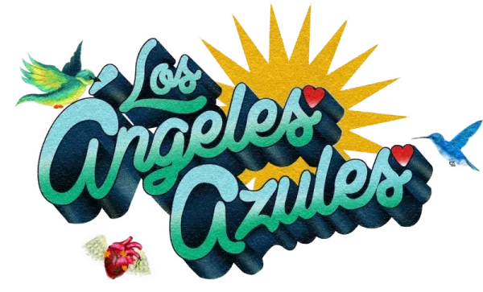
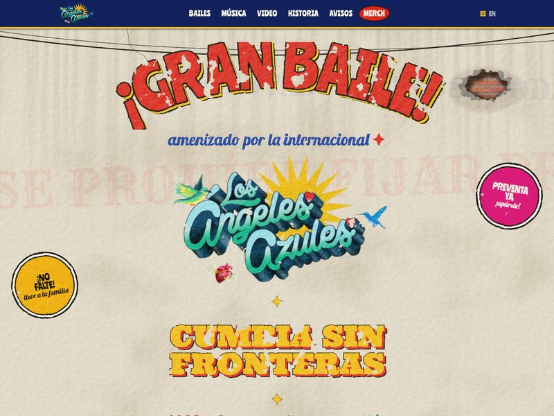
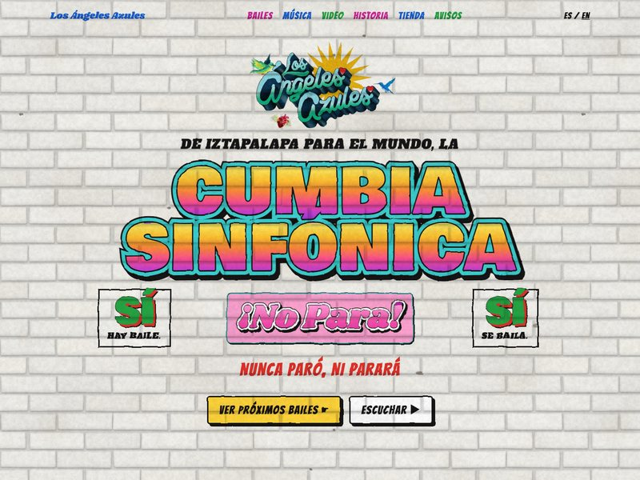
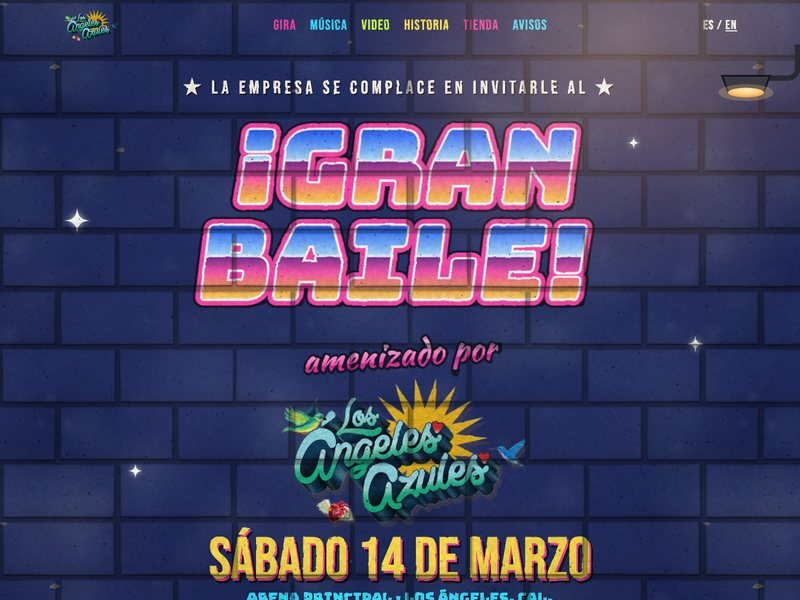
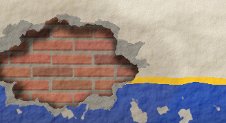

Un sitio que se recorre como una calle de pueblo: bardas encaladas con anuncios de baile pintados a mano, la tienda de discos con su cortina, la fonda, el abarrotes y el aviso a la comunidad. La cumbia de Los Ángeles Azules nació en el barrio, y el sitio también.
Las tres usan el mismo contenido, el logo oficial y el mismo sistema de manejo. Cambia el tipo de barda y el tipo de rotulista. Las tres son prototipos navegables y se adaptan a celular.

Bardas de colores gastadas por los años: cal, salitre, tabique expuesto, la tienda de discos, la fonda y el abarrotes. La más narrativa y nostálgica.

Ladrillo encalado y lettering popular de hoy: letras con degradado, contorno turquesa y sombra negra, cinta en script y recuadros “SÍ hay baile”. La más limpia, alegre y compartible en redes.

Block pintado de azul bajo la luz del poste y letra cromada sonidera. El inicio es el anuncio del próximo baile y se actualiza solo con la gira. La más de fiesta y de concierto.
Plantilla genérica de WordPress + Elementor. El logo ya tiene muchísima personalidad (letra 3D, sol, colibríes, sagrado corazón), pero el sitio no la continúa.
La gira “Cumbia Sin Fronteras” aparece como banner con enlace a preventa, pero no hay ciudades, recintos ni fechas consultables.
La etiqueta “Buy” se repite en casi todos los bloques sin dejar claro qué se compra. En inglés, en un sitio en español.
Merch es sólo un enlace externo; no hay producto visible ni antojo antes de salir del sitio.
Una decena de hojas de estilo minificadas y plugins de constructor: impacto directo en velocidad móvil, que es donde está casi todo el público.
El newsletter no pide ciudad: no se puede avisar “hay baile cerca de ti”, que es el mensaje que más vende boletos.
Cada sección del sitio es una pared real de pueblo o de barrio, con lo que tienen esas paredes: cal manchada de humedad, ladrillo donde se cayó el aplanado, pintura descarapelada, rótulos viejos que se asoman debajo de la cal y letras hechas a pincel por un rotulista.
“Gran baile · amenizado por la internacional…”: la estructura clásica de la barda de baile es el inicio del sitio.
Anuncios viejos (“Vulcanizadora”, “Comida corrida”, “Se rentan sillas”) que se transparentan bajo la cal.

Relieve de aplanado, salitre que sube del piso, escurrimientos, grietas y tabique rojo expuesto bajo el aplanado gris. Todo generado con SVG, sin fotos pesadas.
“HAY:”, “AVISO”, “Hoy no se fía, mañana sí”, “No tire basura”: el tono del barrio para navegar.
La media barda pintada cierra cada sección; cada pared tiene su color.
Óvalos a pincel con su manita ☛. El desgaste nunca toca botones ni textos que hay que leer.
La paleta sale del propio logo (turquesa de las letras, amarillo del sol, rojo del corazón) y se completa con los colores de barda: añil, rosa mexicano, verde bandera y cal.
Letra de molde condensada, hecha a pincel.
La letra “de circo” de las fachadas y los carteles de baile.
Para los gritos: anuncios cortos y muy visibles.
La letra alta y apretada de los carteles de baile.
La cursiva de pincel que dialoga con el logo.
Para frases largas pintadas a mano.
Mezclar varias letras en una misma barda es parte del lenguaje del rotulista. Para producción, lo ideal es que un rotulista real pinte los títulos y se digitalicen (ver “Idea de campaña”).
| Sección | Pared | Qué resuelve |
|---|---|---|
| Inicio | Barda de “¡Gran baile!” con cable de luz y carteles | Una sola llamada principal (gira o estreno), editable sin diseñador. |
| Tour | Barda amarilla “Próximos bailes” + carteles pegados | Fechas reales, filtro por país, “¡Agotado!”, botón directo a boletos. |
| Música | Tienda de discos “La Azul”: cortina pintada y letrero de “HAY:” | El estreno en la cortina; el catálogo en la lista del “HAY:”. |
| Video | Fonda: tele vieja y menú de “video corrido” | Reproductor más lista de videos (primer tiempo, segundo, guisado, postre). |
| Historia | Mural del barrio + placa conmemorativa | Biografía con un tono de orgullo local. |
| Merch | Abarrotes “Los Azules” con toldo | Producto visible antes de ir a la tienda. |
| Newsletter | “AVISO a la comunidad” | Correo + ciudad para avisar de preventas cercanas. |
| Pie | Muro de cemento: “No tire basura, ¡sí baile cumbia!” | Redes, enlaces y contacto. |
En celular cada barda se apila y la navegación baja a una barra al alcance del pulgar, con Merch en un sello redondo al centro. Las dos vistas son el prototipo real y se pueden usar.
El diseño sólo vale si el equipo lo puede actualizar solo, rápido y sin romperlo.
Sitio estático rápido (Astro o Next) con un CMS por bloques (Sanity, Strapi o WordPress “headless”). El equipo llena campos; el diseño de rótulo se aplica solo.
El tablero de bailes se alimenta de Bandsintown o de la ticketera. Una fecha nueva aparece en el sitio sin tocar nada.
Al publicar un sencillo se carga una vez y genera página, tarjeta de la tiendita y enlaces a todas las plataformas (estilo smart link).
Catálogo de la tienda oficial leído vía API (p. ej. Shopify Storefront): productos y precios dentro del sitio, pago en la tienda.
Newsletter con ciudad/C.P. para mandar “hay baile cerca de ti” cuando abre una preventa. Integración con la herramienta de correo del equipo.
ES/EN con contenido separado (no traducción automática), clave para la gira en EE.UU.
Analítica por campaña: clics a boletos, a plataformas y a merch por sección, para saber qué cartel vende.
Meta: carga < 2.5 s en 4G, contraste AA, navegación con teclado y respeto a “reducir movimiento”. Las texturas son CSS/SVG, no imágenes pesadas.
Manual corto con plantillas de cartel, estrella y tablero, para que redes sociales y el sitio hablen igual.
Invitar a rotulistas de Iztapalapa y de las ciudades de la gira a pintar los títulos del sitio en bardas reales. Se fotografían, se digitalizan y se convierten en los encabezados finales: cada sección firmada por un rotulista.
Videos del proceso (time-lapse de la barda pintándose) para lanzar el sitio, y una barda nueva por cada ciudad del tour: “Hoy, gran baile en Houston”.
Tiempos estimados, a validar en descubrimiento.